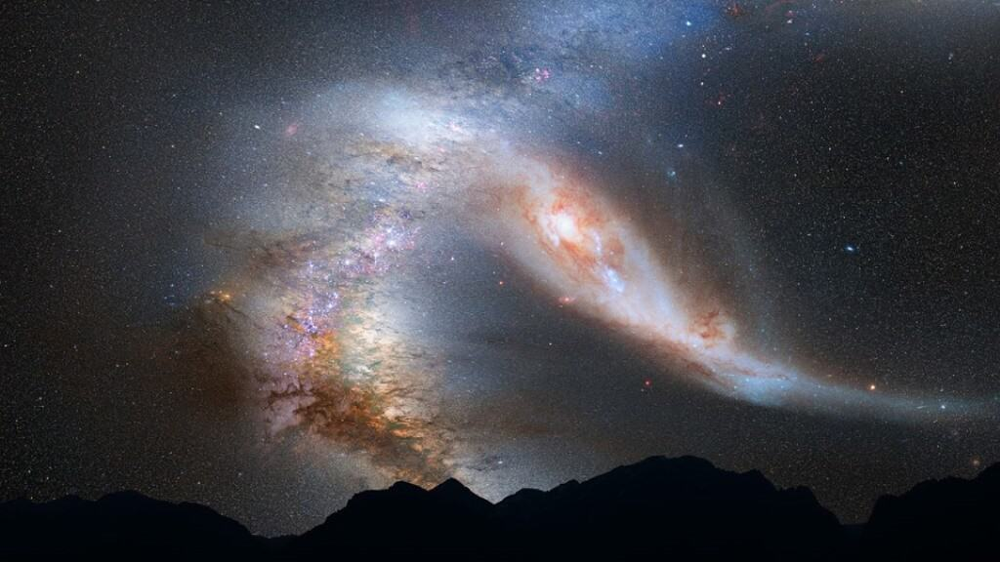
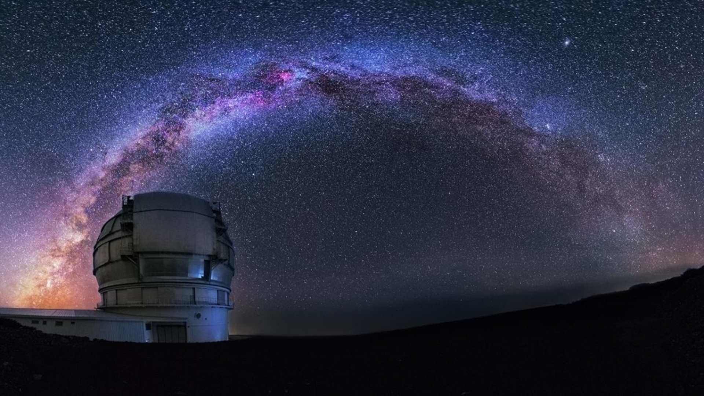
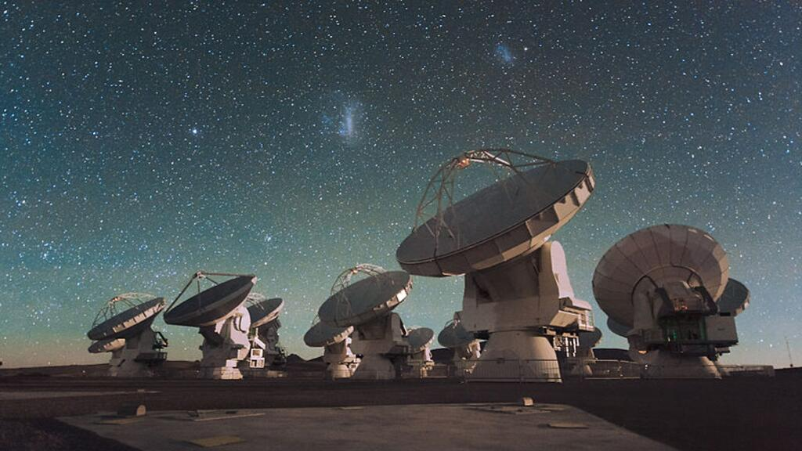
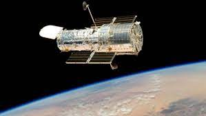

La Astronomía es la ciencia natural que se encarga de estudiar y analizar los cuerpos celestes del universo, incluidos las estrellas, los planetas, sus satélites naturales, los asteroides, cometas y meteoroides, la materia interestelar, las nebulosas, la materia oscura, las galaxias y demás; por lo que también estudia los fenómenos astronómicos ligados a ellos, como las supernovas, los cuásares, los púlsares, la radiación cósmica de fondo, los agujeros negros, entre otros, así como las leyes naturales que las rigen. La astronomía, asimismo, abarca el estudio del origen, desarrollo y destino final del universo en su conjunto mediante la cosmología, y se relaciona con la física a través de la astrofísica, la química con la astroquímica y la biología con la astrobiología.
La astronomía ha estado ligada al ser humano desde la antigüedad y todas las civilizaciones han tenido contacto con esta ciencia. Personajes como Aristóteles, Tales de Mileto, Anaxágoras, etc, han sido algunos de sus cultivadores. La metodología científica de este campo empezó a desarrollarse a mediados del siglo xvii. Un factor clave fue la introducción del telescopio por Galileo Galilei, que permitió examinar el cielo de la noche más detalladamente.
El tratamiento matemático de la Astronomía comenzó con el desarrollo de la mecánica celeste y con las leyes de gravitación por Isaac Newton, aunque ya había sido puesto en marcha por el trabajo anterior de astrónomos como Johannes Kepler. Hacia el siglo xix, la astronomía se había desarrollado como una ciencia formal, con la introducción de instrumentos tales como el espectroscopio y la fotografía, que permitieron la continua mejora de telescopios y la creación de observatorios profesionales.
Un telescopio es un instrumento óptico que permite capturar luz (radiación electromagnética) de forma tal que sea posible observar objetos que son de muy bajo brillo y/o que se encuentran a grandes distancias. El poder de capturar luz dependerá del diámetro del objetivo del telescopio .Son telescopios que utilizan lentes o espejos para recolectar y enfocar la luz visible. Uno de los primeros telescopios astronómicos fue construido por Galileo Galilei en 1609.
Un radiotelescopio es una antena y un receptor de radio especializado que se utiliza para detectar ondas de radio de fuentes de radio astronómicas procedentes del espacio. Los radiotelescopios son el principal instrumento de observación utilizado en la radioastronomía, que estudia la porción de radiofrecuencia del espectro electromagnético emitido por los objetos astronómicos, al igual que los telescopios ópticos son el principal instrumento de observación utilizado en la astronomía óptica tradicional, que estudia la porción de onda de luz del espectro procedente de objetos astronómicos. A diferencia de los telescopios ópticos, los radiotelescopios se pueden utilizar tanto de día como de noche.
es uno de los telescopios espaciales más renombrados de la astronomía moderna que orbita en el exterior de la atmósfera terrestre, en órbita circular alrededor del planeta Tierra a 593 kilómetros sobre el nivel del mar, con un período orbital entre 96 y 97 minutos. El telescopio espacial Hubble, lanzado en 1990, ha proporcionado imágenes y datos valiosos en una variedad de campos astronómicos.
Los astrónomos teóricos utilizan una gran variedad de herramientas como modelos matemáticos analíticos y simulaciones numéricas por computadora. Cada uno tiene sus ventajas. Los modelos matemáticos analíticos de un proceso por lo general, son mejores porque llegan al corazón del problema y explican mejor lo que está sucediendo. Los modelos numéricos, pueden revelar la existencia de fenómenos y efectos que de otra manera no se verían.
Los teóricos de la astronomía ponen su esfuerzo en crear modelos teóricos e imaginar las consecuencias observacionales de estos modelos. Esto ayuda a los observadores a buscar datos que puedan refutar un modelo o permitan elegir entre varios modelos alternativos o incluso contradictorios.